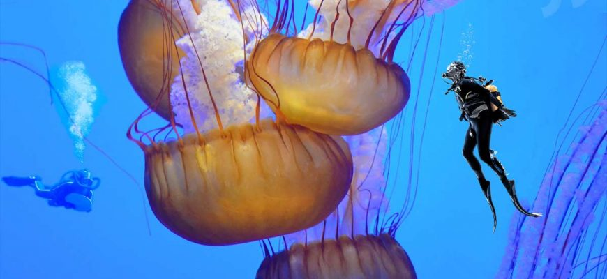

Львиная грива
Эта медуза считается одной из самых крупных. Размер ее купола может превышать два с половиной метра, а тонкие красивые щупальца, благодаря которым она и получила свое название, — достигать 30 метров. Прикосновение к щупальцам этого морского обитателя оставляет болезненный ожог, а токсины могут вызвать у человека аллергию, мелкую рыбу даже убить. Где обитает: в прибрежных водах Австралии, Новой Зеландии и даже Арктики. Медуза живет в Тихом и Атлантическом океане, однако почти никогда не поднимается южнее 40 градусов северной широты.
